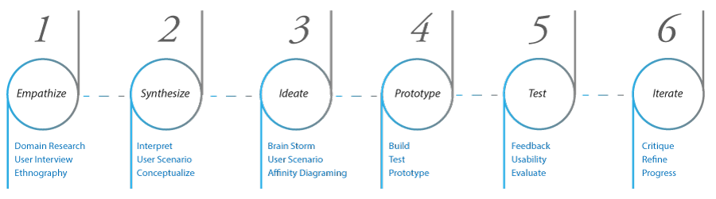
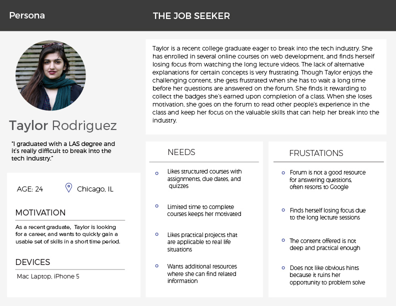

Huddle is an online learning platform designed for users to learn front-end design skills to a professional level. To maximize the effectiveness of online learning, Huddle features social integration to utilizes peers for faster question response rate, project feedback and foremost, motivate each other to excel in the lessons.
I worked on this project as the UX designer, in collaboration with another UX Designer 2 other UI designers along with my project director.
Approach
We used the Google 5 Day Design Sprint, Agile Methodology, as well as Design Thinking to approach the online learning project.

Tools Methods
Prototypes (Axure, InVision, paper prototype), User Interviews, Surveys, SWOT Analysis, Competitive Analysis, Personas, SME Interviews, Usability Testing
Project Brief
Online learning suffers from the highest drop-out rates. Through our research, we discovered that slow response time, lack of feedback, and minimal interaction with peers all contribute to the loss of motivation.
Research
Domain Exploration
I started our domain research with competitive analysis and SWOT analysis to familiarize ourselves with the existing online learning industry and search for new opportunities for our online learning platform.
Key Findings: We discovered that most online learning platform lacks native social integration, and are either synchronized to a live instructor or completely self-paced.
User Interviews
Following the domain exploration, I conducted user interviews for the users to understand our users learning process, frustrations, as well as their goals and motivations to learning regardless online or offline. We then used an affinity diagram to synthesize our results.
Key Findings: Here are some patterns observed among the typical users I’ve observed from the affinity diagram.
Slow Response Time to users questions increases frustration and hinders user’s motivation
collaborating and interacting with their peers helps motivate the users finish the course
Having limited time to complete the course helps pace user through course material
Synthesize
Personas
From affinity diagram and the all the data we've collected, I was able to distill the information down into two personas that reflects our most typical users for us to keep in mind throughout our design.
Key Findings: Ashley learns best from bouncing ideas off of her peers. She also needs enough time flexibility to fit the online lessons around her work schedule
taylor

Key Findings: Taylor needs faster responses to her questions so she can move through the course material faster. Taylor also prefers structured schedule to help her pace herself.
Problem Statement
From all the research, I created a problem statement for our design.
“The lack of social integration is a point of frustration and often related to loss of motivation, therefore, the users need to have a sense of a community powered by a group-based learning platform”
Design Principles
Here are the 3 central design principles that our platform will maintain throughout.
1. Facilitate community learning without impeding independent learning
2. Appear welcoming and useful to learners from all levels of expertise
3. Encourage interaction between teammates and other site member
Ideate
Brainstorm & Sketch
Having a direction laid out for our design, we started brain storming by sketching our ideas independently. At the end, we went around and put stickers on the ideas we liked from each other’s sketches.
Key Findings: One of the challenges was to devise a system where the users can be placed in groups to collaborate and interact with their peers learning the same material without compromising the time flexibility and hindering each other from continuing or working ahead.
User Journey
Building from our sketches, I created user journey maps to help us relate to our users experience going through the process.
Wireframing
From the sketches, I flushed out all the different states and made them into wireframes
Prototype & Iterate
InVision Prototype
To quickly gather user feedback, I linked all the states from the wireframe into InVision to start user testing and quickly gather concept validation. We wanted to make sure we fail early on before investing too much resource on a unsustainable ideas. Intially, we had the users chose a start date with a set end date and place them with 4 others with the same start date.
Key Findings: I discovered that users liked the idea of being placed in small groups of 5 people to receive help and critique; however, the process of choosing a start date from the calender to synchornize with others was too confusing, and relying on each other to complete projects can potentially hinder people who want to work faster.
Axure Prototype
From the results, I devised an improved signup session by placing the users in a groups of 5 and starts on every Monday by default.
I also altered the collaboration portion so people working on a slower pace won't hinder others; instead, requiring the users to upload their work as well as provide feedback to each other in order to encourage interactions between peers.
I iterated the results into a higher fidelity prototypes with Axure. With the users' feedback in mind, we created up 2 sets of Axure prototypes following same ideas but different executions for further user testing. We then combined the working ideas into a single prototype.
Key Findings: User testing showed the sign-up process was significantly improved. The “profile” and “dashboard pages were merged together to create a more fluid experience without compromising functionalities from either. We also added a chat function within the small groups to encourage more commuication and using peers to answer each others questions.
With the feedback we received from our user testing, we did a third round of iteration with help from our lovely UI team Becca and Meg to create a high-fidelity screens for InVision. Unfortunately the InVision prototype was deleted, so I will show you some of the key screens here.
Landing Page Hero Image: The landing page hero image is the first impression of the platform. We wanted to make sure the users can immediately understand that Huddle is a community driven platform.
Courses Page: The courses page is where the users are able to explore different options of the courses they wish to take.
Dashboard Page: The dashboard is where the users view classes in progress, as well as seeing active group members.
In Class Page: During the class, the yellow "Huddle Button" is where the user engage in interaction with their peers. They use it to chat, provide feedbacks, and upload projects for each other. The three smaller buttons are usuall hidden, and flys out on hover for the users.
Notes: Huddle also features natively supported note taking system so the users can take notes without interrupting the video lessons for a more fluid experience.
Gallery Page: The gallery page allows the users to view others' projects and inspire each other.
Results
To determine the results of our design, one of the methods I decided use was to run a net promoter score survey. The result is presented below.